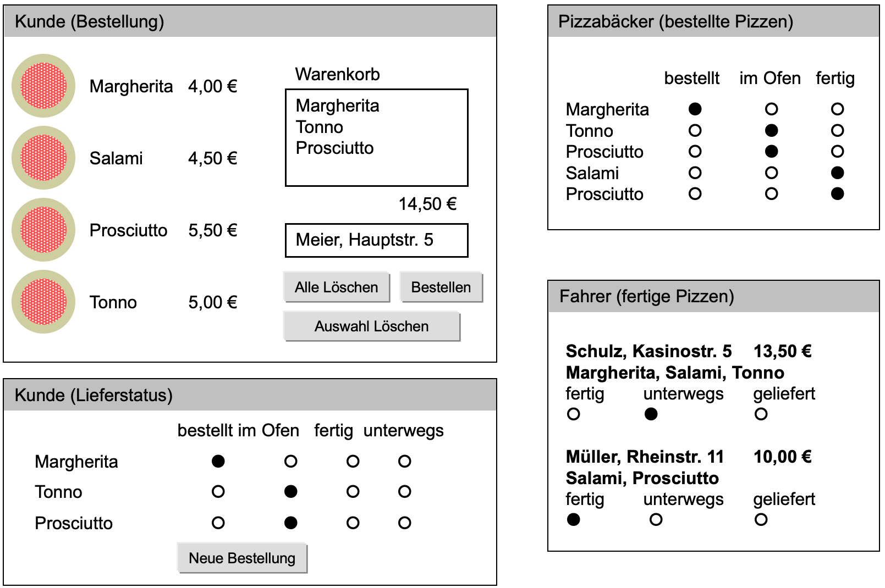

Anforderungen an die Web-Applikation
Note
Hinweis: Die Anforderungen sind aus Sicht des Pizzaservice beschrieben. Wenn Sie einen eigenen Webshop entwickeln, dann müssen Sie die Anforderungen entsprechend übertragen (bspw. kann anstelle der Bäckerseite eine Versandabteilungs- oder Kommissionierungsseite etc. erstellt werden). Die Anforderungen hinsichtlich Aufbau und Funktionsweise gelten dann analog für die Seiten des eigenen Webshops.
Aufbau
Der Pizzaservice bzw. Onlineshop soll folgende vier Webseiten enthalten (gilt entsprechend auch für einen eigenem Webshop):
- Bestellung
- Bestellstatus (→ die Aktualisierunglogik wird in Termin 3 implementiert)
- Pizzabäcker
- Fahrer
Der Pizzaservice soll mit HTML5 und CSS Level 3 dargestellt werden
Als Webserver wird Apache 2 verwendet und als Datenbank MySQL (enthalten im XAMPP Paket.)
Die Abnahme erfolgt auf Ihren Laptops mit den gängigen Browsern.
Für die PHP-Entwicklung müssen Seiten-Templates (→ siehe Termin 2: PHP – Seitenklassen, Datenbankzugriff, Sessionmanagement und Sicherheit) verwendet werden, die vorgegeben und über den EWA-Moodlekurs herunterladbar sind.
Designskizze
Konzeptionelle Darstellung der vier Web-Seiten des Pizzaservice bzw. Onlineshops
Anforderungen des Auftraggebers
-
Pizzabestellung
Hier kann der Kunde seine Pizzen aus der Speisekarte auswählen und in einen Warenkorb übernehmen.
Es wird der Preis der Bestellung angezeigt und es muss eine Lieferadresse angegeben werden.
-
Bestellstatus (=Kundenseite)
Hier kann ein Kunde sehen, in welchem Zustand seine Pizzen sind (
bestellt,im Ofen,fertig,unterwegs).Er sieht nur seine Bestellung – und keine Aufträge von anderen Kunden.
-
Pizzabäcker
Hier werden die bestellten Pizzen angezeigt. Der Pizzabäcker kann den Status für jede Pizza von "
bestellt" auf "im Ofen" bzw. "fertig" setzen.Übernimmt der Fahrer eine Pizza, so verschwindet sie aus der Liste.
-
Fahrer
Hier werden Bestellungen mit den einzelnen Pizzen, Preis und Adresse angezeigt. Der Fahrer kann den Status der Lieferungen verändern.
Eine Lieferung ist entweder "fertig", "unterwegs" oder "geliefert".
Lieferungen tauchen erst beim Fahrer auf, wenn alle zugehörigen Pizzen fertig sind.
Ausgelieferte Bestellungen verschwinden aus der Liste.
Sonstige Anforderungen
-
Es werden nur gültige Bestellungen akzeptiert
-
Die Auswahl einer Pizza soll über einen Mausklick auf ein Pizzasymbol erfolgen
-
Der Warenkorb bietet die allgemein üblichen Funktionen
-
Die Bestellseite passt ihre Darstellung für schmale Handybildschirme an und verwendet ein responsives Layout.
-
Versuchen Sie das Layout so umzusetzen, wie es in der Designskizze dargestellt ist. Es sollen 4 getrennte Seiten entwickelt werden.
-
Die Seiten
Pizzabäcker,BestellstatusundFahrersollen sich automatisch aktualisieren. -
Es gibt zu Testzwecken eine weitere Webseite
Übersicht, welche (für einfache Tests) Links zu den 4 Webseiten beinhaltet.Note
Hinweis:
Alternativ können Sie auch eine Navigationsleiste bzw. ein Navigationsmenu in die Web-Applikation integrieren, dann brauchen Sie keine Übersichtsseite zu implementieren.